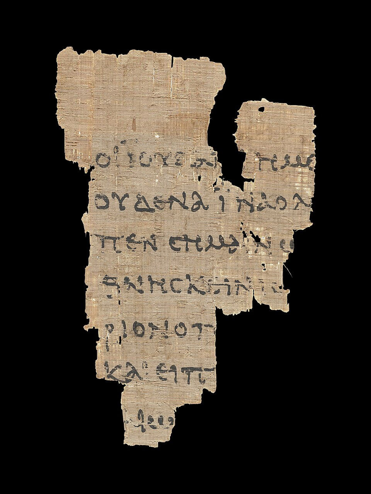

Here the project crosses a threshold — out of the Hebrew of the Tanakh and into the Koine Greek of the New Testament, what a number of traditions call the Greek Scriptures. The ethos doesn't change; the language, the manuscripts, and one or two famous arguments do. This page is the reference desk for that crossing: the texts we translate from, how a body of roughly 5,800 Greek manuscripts is actually weighed, and what carries over from the Hebrew chapters. It's a living page — updated as the method for the Greek Scriptures takes shape.

What changes. The source language is now Greek, not Hebrew. And the source text works differently: the Hebrew chapters translate one remarkably standardized traditional text (the Masoretic Text). The Greek New Testament has no single such text — instead there are thousands of manuscripts, the oldest on papyrus from within a century or so of the writing, and the base for translation is a critical text that weighs them against one another. One more thing changes: the words of Jesus will be set in red, the convention this library has promised since Genesis.
What stays. Everything that makes this a librarian's Bible and not a preacher's. Essentially literal, in a natural modern register. The same seven-version shelf under every chapter — the NIV, KJV, Douay-Rheims, Living Bible, 1599 Geneva, ASV, and NWT all carry the New Testament, so the comparison continues unbroken. The neutrality rule: where traditions divide, the notes give the readings with their pedigrees and don't vote. The echo system — and here it grows a new dimension, because the New Testament quotes the Old on nearly every page, so the cross-references will finally run between books. And the honesty habits: where a word is uncertain or the manuscripts disagree, the notes say so plainly instead of pretending to a confidence the evidence can't support.
The base for translation is the critical Greek New Testament in the Nestle tradition — an eclectic text that doesn't reprint any one manuscript but reconstructs, variant by variant, the earliest recoverable reading, resting mainly on the oldest Alexandrian witnesses. Alongside it the notes consult the printed critical editions and the primary manuscripts behind them:
Older still than the codices, and the reason we can say the Alexandrian text is early and not a late editorial invention:
Independent early translations corroborate the Greek from the outside: the Latin — the Vulgate, which is exactly what the Douay-Rheims on our shelf renders into English — along with the Coptic (Egyptian) and Syriac traditions. When a Greek reading turns up already carried in a 3rd- or 4th-century version in another language, that is a second, independent vote for its antiquity.
A practical note: you weigh the witnesses that actually preserve the book in front of you. The John papyri (P52, P66, P75) are gold for the Gospel of John and silent about Paul; P46 is the reverse. And though the two great codices carry the Greek Old Testament too, both are missing early Genesis — Vaticanus begins at Genesis 46:28 — which is why the Hebrew chapters lean on the printed critical Septuagint rather than on B and א directly.
It sounds impossible — around 5,800 Greek manuscripts, plus thousands more in Latin, lectionaries, and quotations in the early writers, and somewhere near 400,000 points of variation among them. But you never weigh them flat, one vote each, and four things collapse the problem down to something a person can hold:
So the honest bottom line: you don't adjudicate 5,800 manuscripts — you read a critical apparatus that has already done the weighing, and it shows you the handful of variants that matter for each verse, with their pedigrees. The amount of text in real doubt is small, and the few large disputed passages are famous and openly flagged in every serious edition — the longer ending of Mark (16:9–20), the woman caught in adultery (John 7:53–8:11), the "Johannine Comma" (1 John 5:7–8). Nothing hidden; the notes will mark them when we reach them.
The New Testament opens, fittingly, on the project's hardest neutrality problem. The Gospel of John begins Ἐν ἀρχῇ ἦν ὁ λόγος — "In the beginning was the Word" — deliberately echoing the first words of Genesis, and then reaches its famous crux: καὶ θεὸς ἦν ὁ λόγος. Most versions render it "and the Word was God"; the New World Translation reads "and the Word was a god." That difference turns on a fine point of Greek grammar — a predicate noun with no article, standing before its verb — and it is exactly the kind of place this project exists to handle honestly. When John 1 is posted, the note will lay out the grammar and the readings with their pedigrees, and won't cast a vote. That is the method the whole Old Testament has followed, carried across the threshold intact.
The Greek Scriptures begin with the Gospel of John.
Its first chapter — the Prologue, John the Baptist's testimony, and the calling of the first disciples — is now live, the first to arrive with the full apparatus above behind it: from the Prologue's "was God / a god" to the manuscript decision at John 1:18, where the earliest papyri decide the reading.
Read John 1 →_recto_John_18,_31-33.jpg){kind=link}